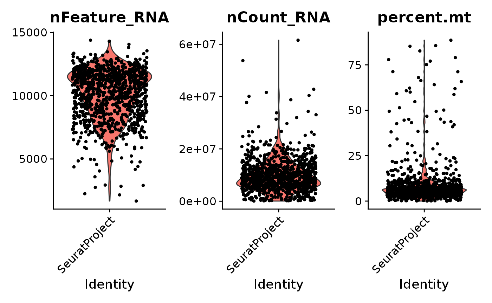
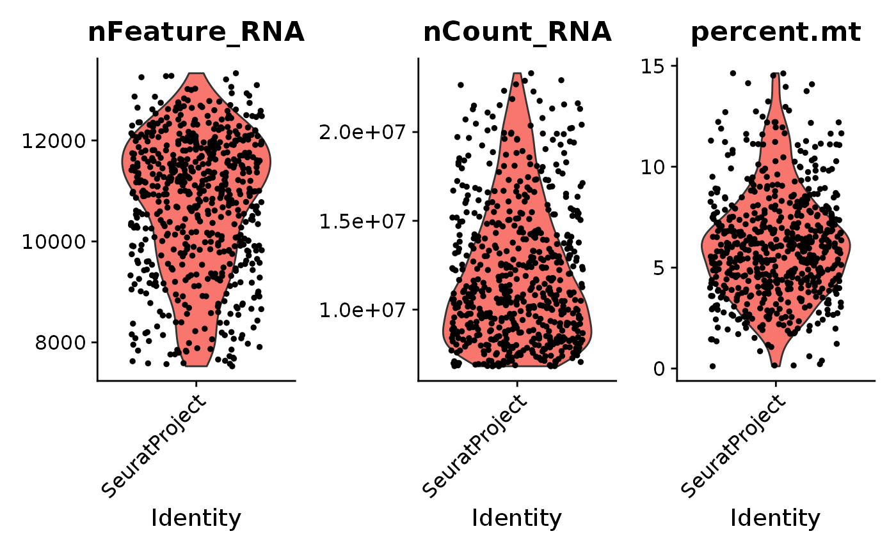
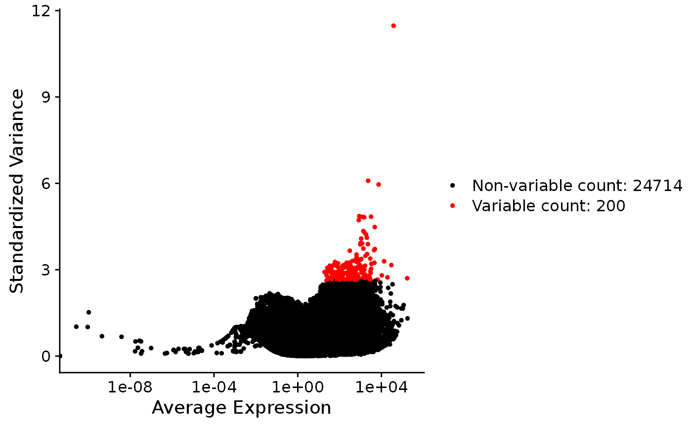
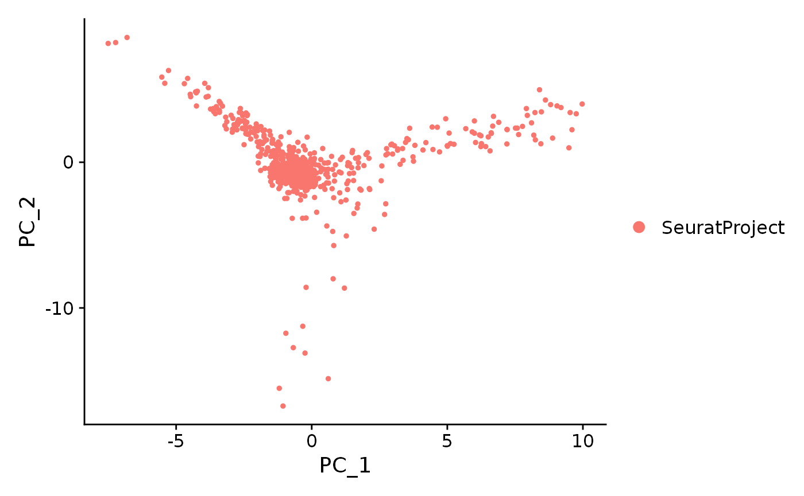
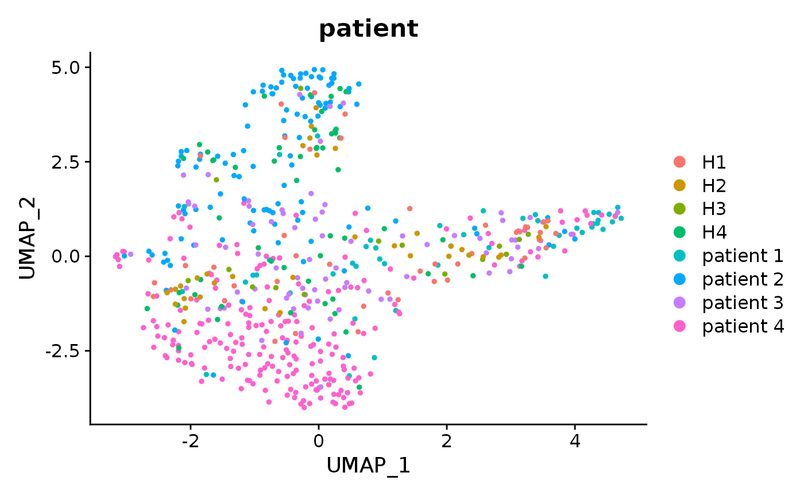
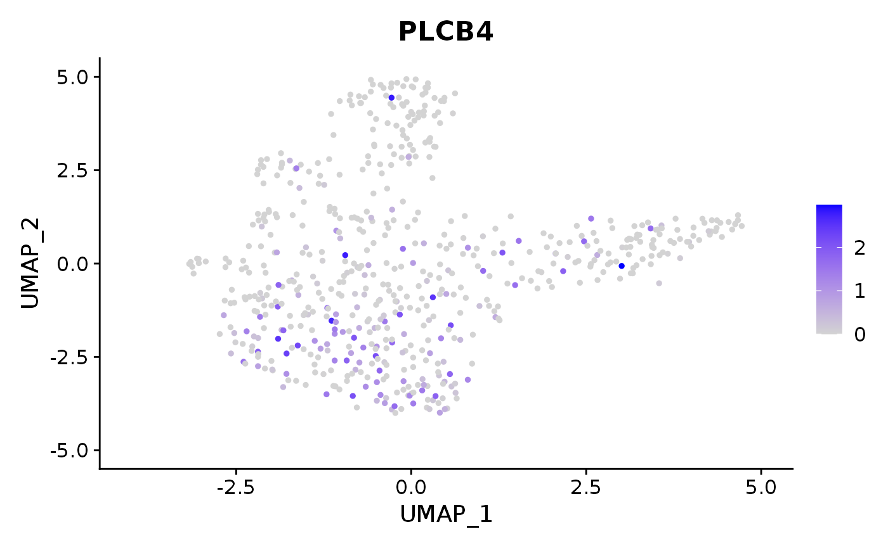
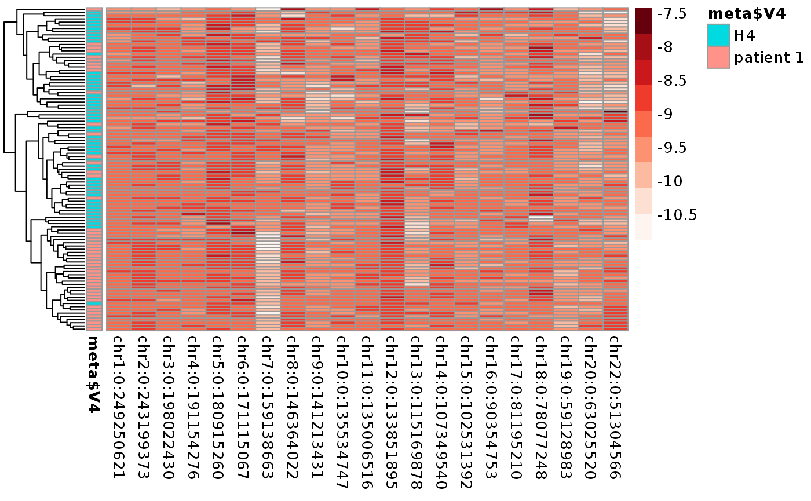
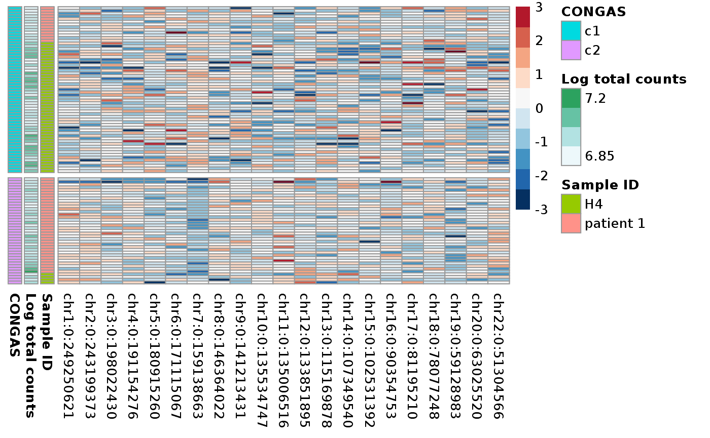
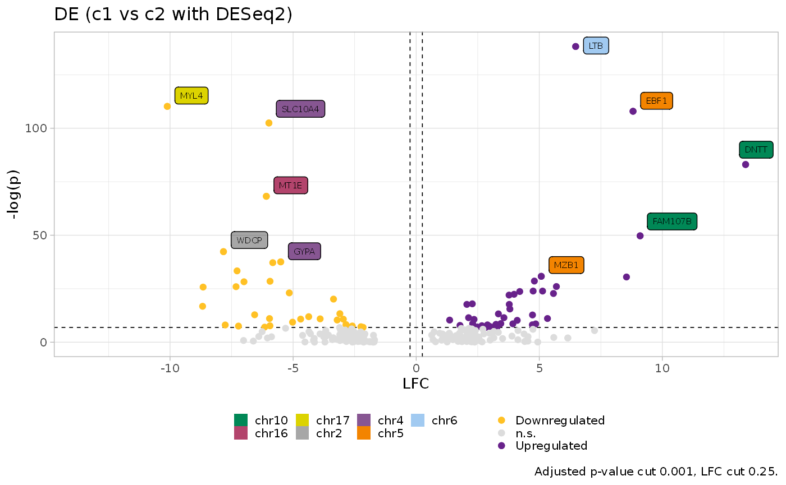

vignettes/monosomy_example.Rmd
monosomy_example.RmdHere we analyze data from Zhao et al. (2017). Data is publicly available at [https://www.ebi.ac.uk/gxa/sc/experiments/E-CURD-6/downloads], we just changed the metadata file name to ‘metadata.tsv’ and the data matrix names to be readable for Seurat. Than the rest of the analysis closely follow the Seurat vignette on pbmc dataset ([https://satijalab.org/seurat/v3.2/pbmc3k_tutorial.html])
#Not really sure how the data were analyzed, I think it's worth to repeat it and have the data preproccessed as you want
library(Seurat) # general scRNA-seq functions
library(biomaRt) # annotations and stuff
# Donwnload the files from the EBI database
# You can call the metadata file as you like
# But remember the actual mtx 10x files shoud have this structure
# directory -> matrix.mtx (with the actual counts, Sparse matrix format), barcodes.tsv (with cellular barcodes) and genes.tsv (with gene names)
meta <- read.table("metadata.tsv", sep = "\t")
# You give the name of the directory where you have the mtx, barcodes and genes file
data <- Read10X(data.dir = "raw/")
# Convert the identifiers from ENSEMBL to HGNC gene names
ensembl = useMart("ensembl",dataset="hsapiens_gene_ensembl")
res = getBM(attributes=c('ensembl_gene_id','hgnc_symbol'),
filters = 'ensembl_gene_id',
values = rownames(data),
mart = ensembl)
res = res[res$hgnc_symbol != "",,]
data <- data[res[,1],]
rownames(data) = res[,2]
# Create a seurat object
scdata <- CreateSeuratObject(counts = data, min.cells = 3, min.features = 200 )## Warning: Non-unique features (rownames) present in the input matrix, making
## unique
scdata[["percent.mt"]] <- PercentageFeatureSet(scdata, pattern = "^MT-")
VlnPlot(scdata, features = c("nFeature_RNA", "nCount_RNA", "percent.mt"), ncol = 3)
# Very high quality dataset, with 10x you go with mt.fract > 15/20 and nFeatures > 200-300
#scdata <- subset(scdata, subset = nFeature_RNA > 7500 & nFeature_RNA < 15000 & percent.mt < 15)
scdata <- subset(scdata, subset = nFeature_RNA > 7500 & nFeature_RNA < 15000 & percent.mt < 15 & nCount_RNA > 6.8e+6 & nCount_RNA < 2.4e+7)
scdata <- NormalizeData(scdata)
scdata <- FindVariableFeatures(scdata, selection.method = "vst", nfeatures = 200)
VariableFeaturePlot(scdata)## Warning: Transformation introduced infinite values in continuous x-axis
scdata <- ScaleData(scdata)## Centering and scaling data matrix
scdata <- RunPCA(scdata, features = VariableFeatures(object = scdata))## PC_ 1
## Positive: CD79B, AKAP12, DNTT, EBF1, RAG1, PTPRE, TP53INP1, ARPP21, CSGALNACT1, DTX1
## MYLK, RUBCNL, LCN6, WASHC4, CD9, SH2D4B, E2F2, BACH2, SOX4, RIC1
## IRF4, SMAD1, EIF2AK3, LCN10, CHST15, VSIG10, VLDLR, JCHAIN, IL16, EVL
## Negative: CA1, HBB, HBD, CA2, HBA1, HBA2, H4C3, IARS1, MPL, SAT1
## CXCL8, ACLY, THBS1, MARS2, CLP1, HBG2, DHX58, TESK2, FIG4, C16orf70
## PLEK, ZNF30, LYZ, TAF5, ZNF607, HJURP, ADGRG6, ZNF155, ZBTB34, ZNF318
## PC_ 2
## Positive: CA1, HBB, HBA1, CA2, REXO2, HBD, HBA2, AKAP12, TP53INP1, CD79B
## RAG1, H4C3, DNTT, E2F2, SMAD1, RIC1, EBF1, ARPP21, YOD1, TESK2
## SH2D4B, DTX1, IARS1, USPL1, MARCHF7, LCN6, MT-CO1, HJURP, EIF2AK3, LCN10
## Negative: CCL5, NKG7, CCL4, GNLY, GZMB, CD3G, GZMH, TNFAIP3, ITGAX, TRAC
## PLEK, MPL, PRDM1, RGS1, DUSP5, FAM107B, LYZ, CAMK2D, IRF8, GRAP2
## FBXO32, S100A10, AXL, CD3D, PIK3R5, SPIRE1, RUNX2, GCH1, GPR183, JAML
## PC_ 3
## Positive: CCL4, NKG7, CCL5, GNLY, HBB, GZMB, HBA1, CA1, GZMH, HBA2
## CD3G, CA2, HBD, TRAC, LBH, REXO2, GRAP2, FBXO32, TNFAIP3, ITGAX
## ISG20, E2F2, CD3D, AKAP12, CSGALNACT1, CEMIP2, CD79B, RAG1, GPCPD1, ZNF18
## Negative: MPL, SOX4, PHACTR1, CXCL8, THBS1, LYZ, PLEK, PPP1R16B, RUNX2, AXL
## ZNF211, ADGRG6, SNED1, RGS1, ZBTB34, S100A10, CAPG, IRF8, JAML, CYBB
## YIPF3, ZNF823, OTULINL, NAPSB, TPP1, SAT1, GPR183, FGF7, TMEM176B, SRP68
## PC_ 4
## Positive: MPL, THBS1, PHACTR1, CXCL8, GABPB1, CCL5, ZNF211, MARCHF7, CEMIP2, SNED1
## VSIG10, YIPF3, STRIP1, SPIRE1, AKAP12, TP53INP1, PIK3IP1, BRAP, TSC1, CD9
## CD3G, ZNF57, ADGRG6, ZNF266, SMAD1, IARS1, C16orf70, RAG1, ZNF33A, FGF7
## Negative: IRF8, JCHAIN, RUNX2, GPR183, CYBB, S100A10, IGKC, AXL, LYZ, NAPSB
## OTULINL, CAPG, PTPRE, DUSP5, H4C3, FAM107B, BEND5, JAML, PIK3R5, RUBCNL
## SULF2, CRYBG1, RGS1, HBB, NCKIPSD, HBA1, CA1, MPO, HBA2, HBD
## PC_ 5
## Positive: LYZ, AXL, S100A10, GPR183, TPP1, PLEK, NAPSB, SULF2, SAT1, CXCL8
## OTULINL, THBS1, ITGAX, JAK1, REXO2, PHACTR1, MPL, MRFAP1, SMAD1, WASHC4
## KAT5, CA2, TBC1D25, HBA1, AKAP12, HBA2, RAG1, CD9, CAMK2D, CA1
## Negative: JCHAIN, DNTT, CAPG, CYBB, EBF1, TNFAIP3, RGS1, FIG4, IL16, ADGRG6
## KBTBD4, CDH2, CHST15, C11orf95, SCMH1, SUCNR1, IGKC, RUNX2, DICER1, ABCA12
## PRR4, TMEM168, NAXD, SOX4, ZNF550, H4C3, MARS2, IRF8, TRAT1, TAF5
DimPlot(scdata, reduction = "pca")
scdata <- FindNeighbors(scdata, dims = 1:30)## Computing nearest neighbor graph## Computing SNN
scdata <- FindClusters(scdata, resolution = 0.5)## Modularity Optimizer version 1.3.0 by Ludo Waltman and Nees Jan van Eck
##
## Number of nodes: 598
## Number of edges: 37115
##
## Running Louvain algorithm...
## Maximum modularity in 10 random starts: 0.6495
## Number of communities: 3
## Elapsed time: 0 seconds
scdata <- RunUMAP(scdata, dims = 1:30)## Warning: The default method for RunUMAP has changed from calling Python UMAP via reticulate to the R-native UWOT using the cosine metric
## To use Python UMAP via reticulate, set umap.method to 'umap-learn' and metric to 'correlation'
## This message will be shown once per session## 22:38:56 UMAP embedding parameters a = 0.9922 b = 1.112## 22:38:56 Read 598 rows and found 30 numeric columns## 22:38:56 Using Annoy for neighbor search, n_neighbors = 30## 22:38:56 Building Annoy index with metric = cosine, n_trees = 50## 0% 10 20 30 40 50 60 70 80 90 100%## [----|----|----|----|----|----|----|----|----|----|## **************************************************|
## 22:38:57 Writing NN index file to temp file /tmp/RtmpghLMlh/file654666733abd
## 22:38:57 Searching Annoy index using 1 thread, search_k = 3000
## 22:38:57 Annoy recall = 100%
## 22:38:57 Commencing smooth kNN distance calibration using 1 thread
## 22:38:58 Initializing from normalized Laplacian + noise
## 22:38:58 Commencing optimization for 500 epochs, with 22330 positive edges
## 22:39:00 Optimization finished
new_meta <- as.data.frame(meta$V4)
rownames(new_meta) <- meta$V1
scdata <- AddMetaData(scdata,new_meta, "patient")
#create a new object with specific patients, for successive analysis, you can also subset based on the UMAP clusters
DimPlot(scdata, reduction = "umap", group.by = "patient")
scdata_filt <- scdata[,scdata$patient %in% c("patient 1", "H4")]
FeaturePlot(scdata, features = "PLCB4")
As we do not have any prior segmentation nor SNPs VAF we can download a cytobad file from UCSC and try to run CONGAS over entire chromosomes (remember that we are looking for big aneuploidy events).
# I load rcongas from source, you can just install the package from github with
# devtools::install_github("militeee/Rcongas")
library(Rcongas)## Registered S3 method overwritten by 'cli':
## method from
## print.boxx spatstat## ✓ Loading Rcongas, 'Copy-Number genotyping from single cells'. Support : <https://militeee.github.io/Rcongas/>##
## Attaching package: 'dplyr'## The following object is masked from 'package:biomaRt':
##
## select## The following objects are masked from 'package:stats':
##
## filter, lag## The following objects are masked from 'package:base':
##
## intersect, setdiff, setequal, union
# Cromosomal arms information
#curl::curl_download("https://hgdownload.soe.ucsc.edu/goldenPath/hg19/database/cytoBand.txt.gz", destfile = "./cytoband.tsv.gz")
# Hope you are on a UNIX system
#system("gzip -d cytoband.tsv.gz")
cyto <- read.table("cytoband.tsv")
# CONGAS wants a coloumn for prior expectation on the CN value
cyto <- cyto %>% dplyr::select(V1, V2, V3, V4) %>% mutate(V4 = substr(V4, 1,1)) %>% group_by(V1) %>% summarize(chr = unique(V1), start = min(V2), end = max(V3)) %>% ungroup() %>% dplyr::select(chr, start, end)%>% mutate(tot = rep(2, length(chr)))We can retrieve the count matrix from the Seurat object
#extract the different data you want from the seurat object
data_norm <- as.matrix(scdata_filt@assays$RNA@data)
data_mat <- round(as.matrix(scdata_filt@assays$RNA@counts))With dataset having a high number of heterogeneous cellular types, median filtering genes over a chromosome with a short window can be useful to remove effects of cell type specific markers with a lot of count that could potentially create false positive. To do so we define a custom function to be passed to get_data that does this filtering and then sums the counts.
filter_median_by_segs <- function(x, k = 3, na.rm = T){
if(sum(x) == 0) return(0)
x = runmed(x,k = k, endrule = "constant")
return(sum(x,na.rm = na.rm))
}
express_counts <- Rcongas:::get_data(data_mat, cnv_data = cyto, type = "fixed_binning", fun = filter_median_by_segs, correct_bins = F)
# always take a look at the heatmap
express_counts <- Rcongas:::filter_segments.rcongas(X = express_counts, filter_mu = 100)## chr1:0:249250621 chr2:0:243199373 chr3:0:198022430 chr4:0:191154276
## TRUE TRUE TRUE TRUE
## chr5:0:180915260 chr6:0:171115067 chr7:0:159138663 chr8:0:146364022
## TRUE TRUE TRUE TRUE
## chr9:0:141213431 chr10:0:135534747 chr11:0:135006516 chr12:0:133851895
## TRUE TRUE TRUE TRUE
## chr13:0:115169878 chr14:0:107349540 chr15:0:102531392 chr16:0:90354753
## TRUE TRUE TRUE TRUE
## chr17:0:81195210 chr18:0:78077248 chr19:0:59128983 chr20:0:63025520
## TRUE TRUE TRUE TRUE
## chr21:0:48129895 chr22:0:51304566
## FALSE TRUE
pheatmap::pheatmap(log(apply(express_counts$data$counts, 1, function(x) x/express_counts$data$cnv$mu) %>% t/ rowSums(express_counts$data$counts)), cluster_cols = F, show_rownames = F, annotation_row = new_meta, color = RColorBrewer::brewer.pal(9,"Reds"))
# if you feel like scaling, you may also used the scaled genes from the Seurat object as shown above, never tried but more sense than this to me
#express$data$counts <- scale(express$data$counts, T, T)We are now ready to perform the inference. Note how we are using different theta hyperparameters here compared to the 10x example.
express_counts$data$counts <- round(express_counts$data$counts)
res <- Rcongas:::best_cluster(express_counts,model = "MixtureGaussian", clusters = 1:3, steps = 300, lr = 0.01, param_list = list("theta_scale" = 3.5, "theta_rate" =0.01, "cnv_var" = 0.10) , method = "BIC", MAP = T, posteriors = T, step_post = 150)
# filter small clusters
res_filt <- Rcongas:::filter_clusters(res, ncells = 10, remove = TRUE)
#plotting the results with some annotations
library(RColorBrewer)
bc <- res_filt$inference$model_selection$best_K
new_meta2 <- as.data.frame(new_meta)[names(res_filt$inference$models[[bc]]$parameters$assignement),, drop = F]
new_meta2$"Log total counts" <- log10(scdata_filt[,names(res_filt$inference$models[[bc]]$parameters$assignement)]$nCount_RNA)
new_meta2$CONGAS = as.character(res_filt$inference$models[[bc]]$parameters$assignement)
colnames(new_meta2)[1] <- "Sample ID"
p1 = pheatmap::pheatmap(scale(log(apply(apply(express_counts$data$counts[names(res_filt$inference$models[[bc]]$parameters$assignement),], 1, function(x) x/express_counts$data$cnv$mu) %>% t ,2, function(x) x/ res_filt$inference$models[[bc]]$parameters$norm_factor))[names(sort(res_filt$inference$models[[bc]]$parameters$assignement)),]), cluster_cols = F, show_rownames = F, annotation_row = new_meta2, color = rev(brewer.pal(11, "RdBu")), cluster_rows = F, gaps_row = cumsum(table(res_filt$inference$models[[bc]]$parameters$assignement)) [c(2,1)],breaks=seq(-3, 3, length.out = 11)
)
p1 Than we can again perform DE and plot it.
de <- calculate_DE(res_filt, round(data_mat)[-which(rownames(data_mat) %in% (Rcongas::hg38_gene_coordinates %>% filter(chr %in% c("chrX", "chrY")) %>% pull(gene))),names(res_filt$inference$models[[bc]]$parameters$assignement)], clone1 = "c1", "c2", method = "DESeq2")
plot_DE_volcano(de)## ✓ Loading CNAqc, 'Copy Number Alteration quality check'. Support : <https://caravagn.github.io/CNAqc/>